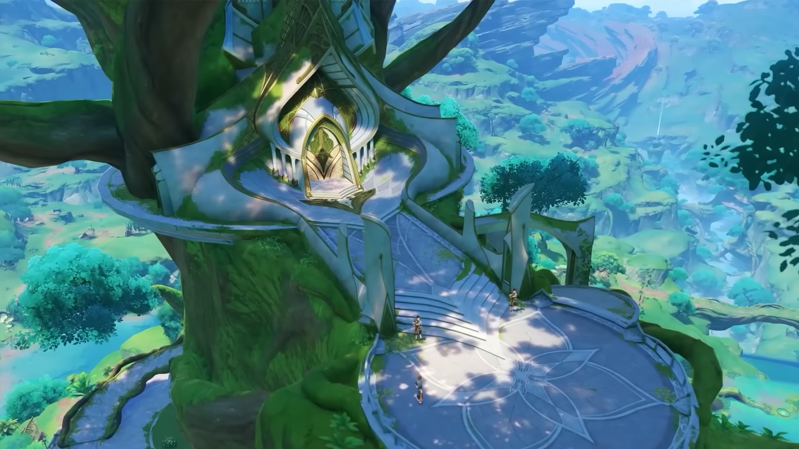
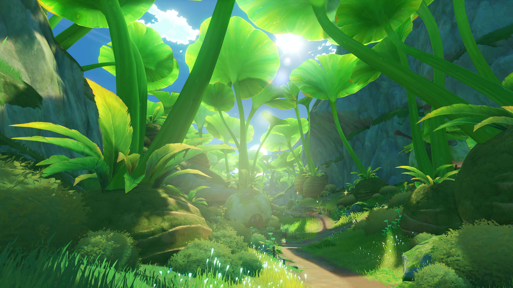
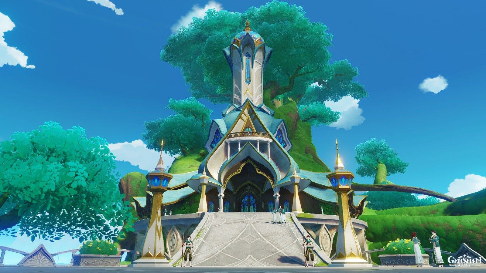
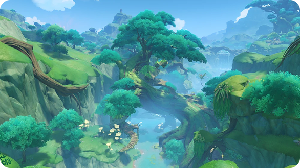
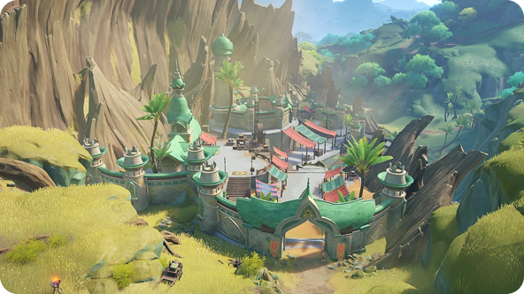

You're naturally curious and love learning about history, science, culture, and the mysteries of the world around you.
"The City of Wisdom & Rainforest Retreat"
SUMERU
Duration: 3 days / 3 nights
14,000 PHP
per person
ABOUT SUMERU
Sumeru, known as the Nation of Wisdom, is an extraordinary destination where lush tropical rainforests meet the golden edges of a vast desert. Renowned for its towering treehouse architecture, world-famous scholarly halls, and vibrant spice bazaars, it offers travelers a dual-environment journey filled with discovery. From misty forest canopies to historic desert outposts, every corner of Sumeru invites curiosity and wonder.


You’ll enjoy this trip if...
You want to explore lush rainforests teeming with wildlife, hidden pathways, and breathtaking natural beauty.
You are fascinated by ancient civilizations and dream of uncovering long-lost ruins and forgotten secrets.
You enjoy solving puzzles and following clues lead to hidden treasures and exciting discoveries.
You prefer adventures that challenge your mind just as much as they inspire your sense of wonder.
YOUR STOPS
A closer look at the destinations waiting for you on this expedition.

SUMERU CITY ACADEMY
Built gracefully around the spiraling branches of the Divine Tree, the Sumeru City Academy is an architectural marvel dedicated to knowledge and innovation. Walk along elevated wooden pathways, explore sunlit library courtyards, and admire the intricate emerald-and-gold detailing of the grand halls. Below the academy, lively market stalls fill the air with the rich aroma of exotic spices and freshly brewed herbal teas. Every visit to this living city of scholars inspires a deep appreciation for learning and craftsmanship.

GANDHARVA VILLAGE
Tucked deep within the vibrant green canopies of Avidya Forest, Gandharva Ville offers a refreshing nature retreat surrounded by waterfalls and giant flora. Stroll across suspended rope bridges, listen to the soothing sounds of forest streams, and learn about local wildlife conservation from seasoned Forest Watchers. Whether you are admiring glowing evening blossoms or enjoying a quiet morning mist on the wooden decks, the village radiates peaceful charm. It is the ultimate sanctuary for travelers seeking to reconnect with nature.

CARAVAN RIBAT
Standing proudly along the monumental Wall of Samiel, Caravan Ribat serves as a fascinating crossroads between Sumeru's lush woodland and its sweeping golden dunes. Explore the sturdy stone ramparts, watch merchant caravans arrive with rare desert goods, and take in dramatic contrasting views of green valleys on one side and endless sands on the other. The outpost's lively trade square offers travelers a unique taste of frontier hospitality and rich cultural exchange. Visiting Caravan Ribat captures the true spirit of adventure across two distinct worlds.
INCLUSIONS
- 3 days / 3 nights eco-lodge and city inn accommodation in Sumeru with daily breakfast
- Guided tours of Sumeru City Academy, Gandharva Village, and Caravan Ribat
- Welcome rainforest spice and herbal refreshment platter
- Forest Ranger trail permits and licensed Sumeru City branch tour guide
EXCLUSIONS
- Cross-border transit to and from Sumeru City
- Lunches, dinners, and specialty beverages not listed in the itinerary
- Personal souvenirs, Akademiya (grand university) archive guest passes, and travel insurance (required)
SAMPLE ITINERARY
DAY 1 - Arrival at Sumeru City Academy
Check-in at Sumeru City Hub, orientation briefing, afternoon architectural tour of the Divine Tree (giant canopy tree) walkways and Sumeru City Academy halls, and welcome spice refreshment platter.
DAY 2 - Gandharva Ville Canopy Walk
Morning trek into Avidya Forest (tropical rainforest), guided canopy tour with local Forest Watchers in Gandharva Ville, and evening stargazing.
DAY 3 - Caravan Ribat & Departure
Breakfast at the lodge, morning excursion to the Wall of Samiel (desert barrier wall) at Caravan Ribat where rainforest meets desert, afternoon souvenir market visit, and evening checkout.
READY TO EXPLORE SUMERU?
Base price: 14,000 PHP per person
Duration: 3 days / 3 nights
Package code: SUME-04

FREQUENTLY ASKED QUESTIONS
What should I wear for the Sumeru tour?
Lightweight, moisture-wicking long sleeves, breathable trousers, and closed-toe trail shoes to protect against rainforest humidity, insects, and desert sand near Caravan Ribat.
What should I bring with me?
Bring your SUME-04 booking code, insect repellent, sunscreen, a wide-brimmed hat, a refillable canteen, and any personal allergy medications.
Is the tour suitable for families and children?
Yes, children love the elevated treehouse walkways of Sumeru City and Gandharva Ville, provided they stay close to guides along elevated forest bridges.
How much walking is involved?
Moderate walking (around 3 hours daily) across spiral wooden ramps in Sumeru City, forest trails in Avidya Forest (tropical rainforest), and sand-packed paths at Caravan Ribat.
Can I explore on my own during the trip?
Yes. You have free afternoon time on Day 3 at the Sumeru City bazaar (open-air market) to shop for spices, textiles, and crafts before evening checkout.
Are there any rules or protocols I should follow during the tour?
Never wander off marked rainforest trails without a Forest Watcher guide, avoid touching unfamiliar glowing flora or fungi, and refrain from entering restricted Sumeru City Academy research archives without clearance.